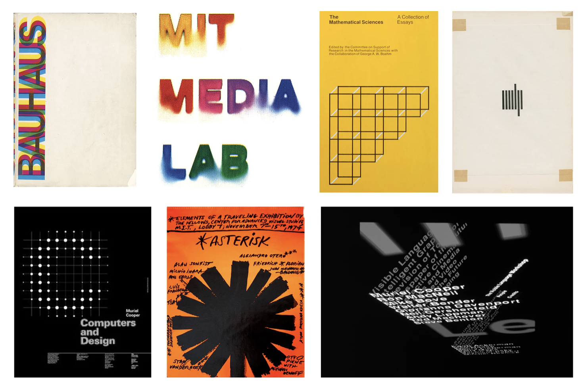

Summary of Cooper's Legacy
Jackson, Machover, Small, and Strausfeld are just four of the countless creators Cooper mentored who now personify her legacy — a legacy that led The New York Times to call out Muriel Cooper as the unsung heroine of 20th-century design. 
NEXT: THE END